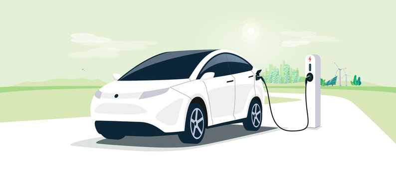
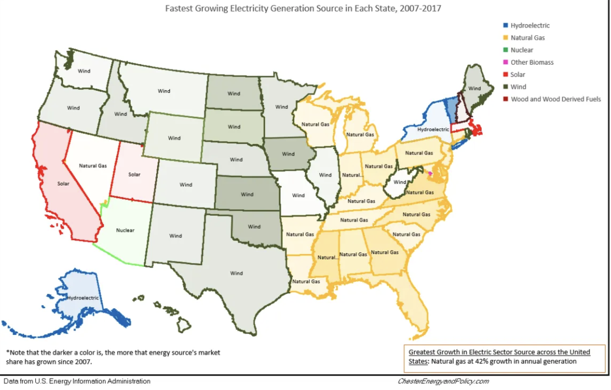
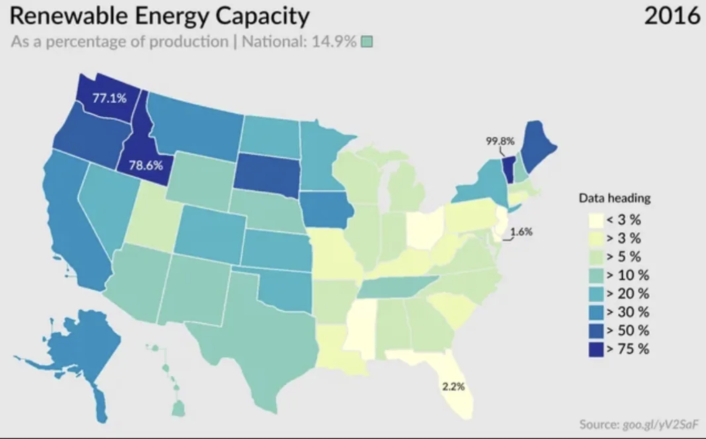
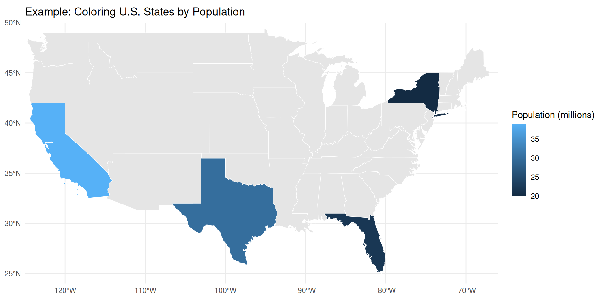

EV Power Project
Applications of joins, pivots, strings, and maps
Agenda
Overview of Project
Lab Review Worksheet
Work through select parts of Project 4
Group work and time for questions
EV Power Project Overview
Electric vehicles reduce direct emissions, but does the electricity used to charge them actually come from clean sources? How clean is the power that charges America’s EVs, and how does this vary across states?

Previous Work
Let’s take a look at some work that’s been done in this field already. What are some improvements we could make in our own analysis?
Graph 1

Graph 2

Let’s Try it Ourseleves:
Dataset: Multiple tables covering U.S. electricity generation by source and average energy costs (2021–2023) from the US Energy Information Administration (EIA) and US Department of Energy
Goal: Analyze the relationship between EV adoption and the cleanliness of each state’s energy mix to understand how “green” electric driving really is across the US using maps
Client: The everyday consumer wanting to make informed, sustainable choices
Defining Key Terms
Direct emissions:
Greenhouse gases released directly from a vehicle’s operation (exhaust from fuel combustion)
Clean energy:
Produces little to no greenhouse gases (includes nuclear, hydro, wind, solar)
Renewable energy:
Comes from naturally replenished sources like solar, wind, hydro, geothermal, biomass
Data Sources
U.S. renewable energy use by state by year
renew_use_2021.csvrenew_use_2022.csvrenew_use_2023.csv
Average energy price by state by year
av_energy_price_2021-2023.csv
U.S. total energy use by state by year
total_energy_use_2021.csvtotal_energy_use_2022.csvtotal_energy_use_2023.csv
EV Registrations by state in 2023
ev-registrations-by_state_2023.csv
Skill for this project: String Manipulation
Purpose: Clean and extract text patterns (like energy source names or units)
Common Regex Tools in R (using library {stringr}):
str_detect(string, pattern) → checks if a pattern exists
str_extract(string, pattern) → extracts the matching part
str_replace(string, pattern, replacement) → replaces text
Skill for this project: Joining Tables
Goal: Combine datasets (for example: energy source + electricity cost + EV registration data)
Given left (X) table and right (Y) table
| Join Type | Description | Result |
|---|---|---|
left_join() |
Keep all rows from the X table | All X + matching Y |
right_join() |
Keep all rows from the Y table | All Y + matching X |
inner_join() |
Keep only matching rows from both | Matching only |
full_join() |
Keep all rows from both tables | All data combined |
semi_join() |
Keep rows from X that have matches in Y | X (filtered) |
anti_join() |
Keep rows from X without matches in Y | X (non-matching) |
Skill for this project: Pivots
Included in tidyr package
pivot_longer(data, cols, names_to, values_to)pivot_wider(data, names_from, values_from)
Refer to Tidyverse Documentation of Pivot for more information
Skill for this project: Basic Mapping
Goal: Visualize state-level metrics (like renewable share or EV ratio)
Libraries: {maps}, {sf}, {ggplot2}
Choropleth Maps
Map where areas (like states) are colored based on a number.
Darker or brighter colors usually mean higher numbers.
Lighter colors usually mean lower numbers.
Example uses: population by state, election results, or renewable energy share.
Basic example of syntax:
# loading example data
pop_data <- data.frame(
name = c("California", "Texas", "New York", "Florida"),
population_millions = c(39, 30, 20, 22)
)
# Join the data by state name
us_joined <- us_states |>
left_join(pop_data, by = "name")
# Plot and color by population
ggplot(us_joined) +
geom_sf(aes(fill = population_millions), color = "white") +
scale_fill_continuous(name = "Population (millions)", na.value = "grey90") +
labs(title = "Example: Coloring U.S. States by Population") +
coord_sf(xlim = c(-125, -66), ylim = c(24, 50), expand = FALSE) +
theme_minimal()
We add data with geom_sf() to color states by metric.
Interactive Maps - leaflet
R package for creating interactive maps
Add base maps (e.g., OpenStreetMap, CartoDB)
Overlay markers, polygons, and popups
Use color palettes to represent data values
Fully interactive and embeddable in Shiny apps or Quarto documents
Putting everything together:
Workflow :
- Clean and extract relevant info with regex
- Merge datasets using appropriate table methods
- Visualize patterns geographically with maps
- Present findings in a report PDF (or, optionally, a Quarto dashboard)
Deliverable :
A clear report PDF answering:
“How renewable is the electricity powering EVs across the U.S.?”
Lab Review Worksheet
30:00
Group work to review essential material. To get started, visit the ed post with the links to EV Power Project repositories. Accept your assignment, clone the repository, and find worksheet.qmd.
Project Work Time
30:00
Get started on the project and feel free to ask questions.